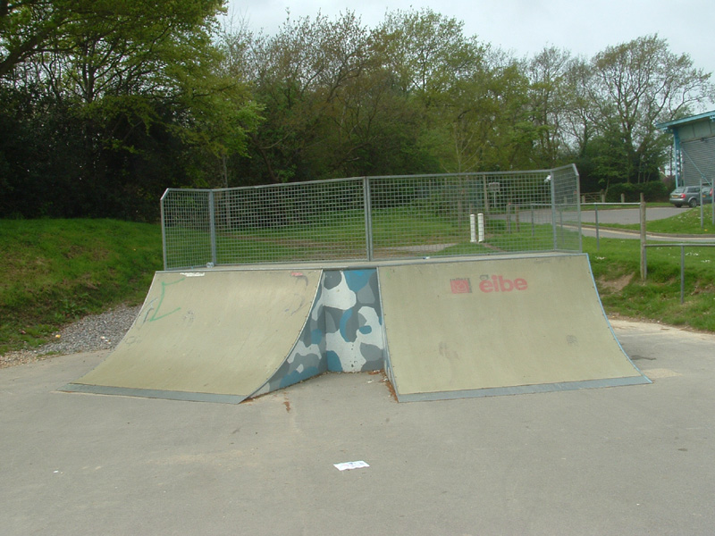
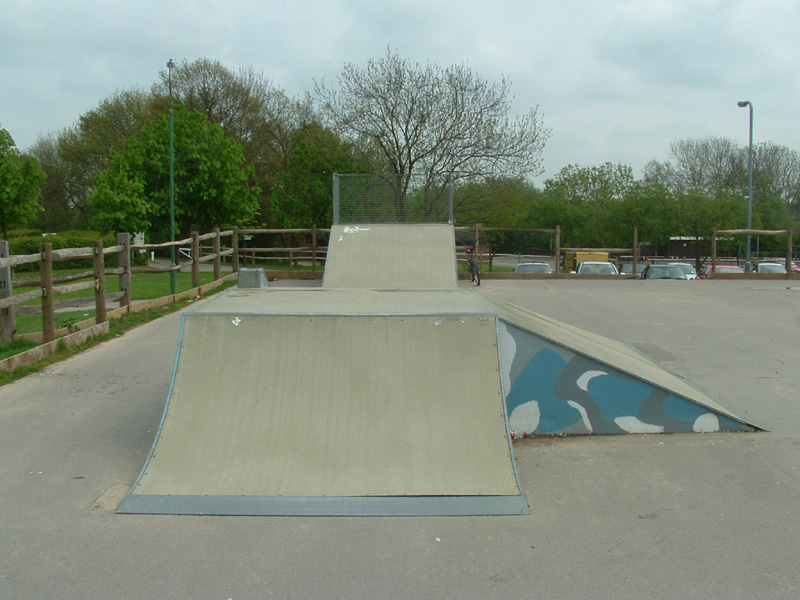
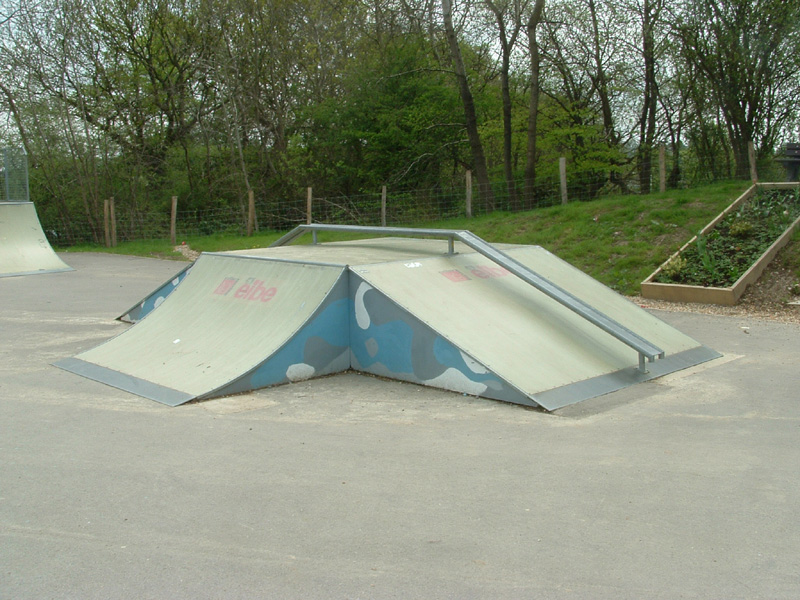
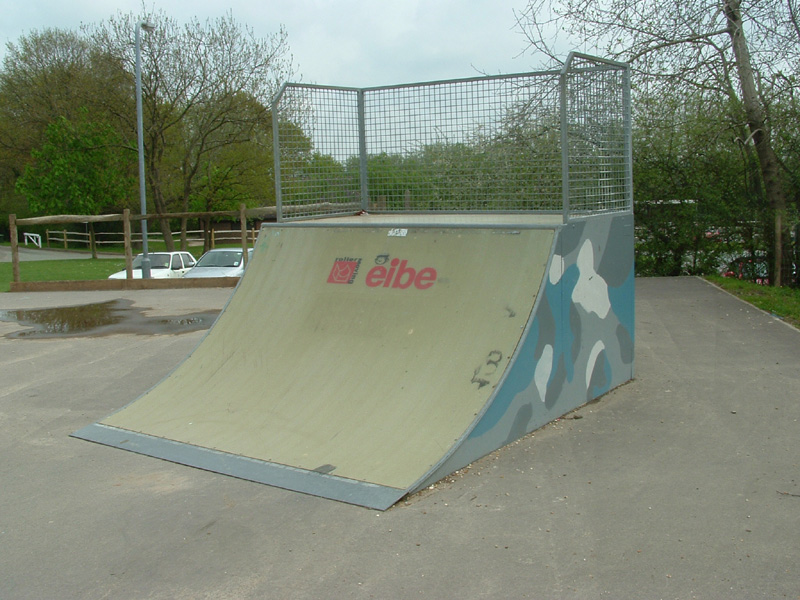
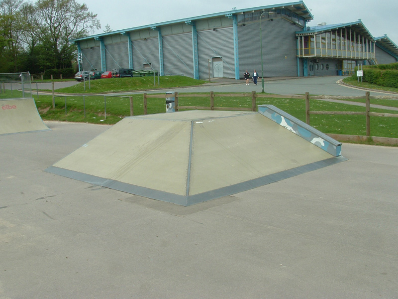
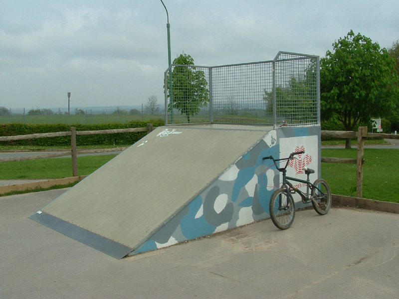
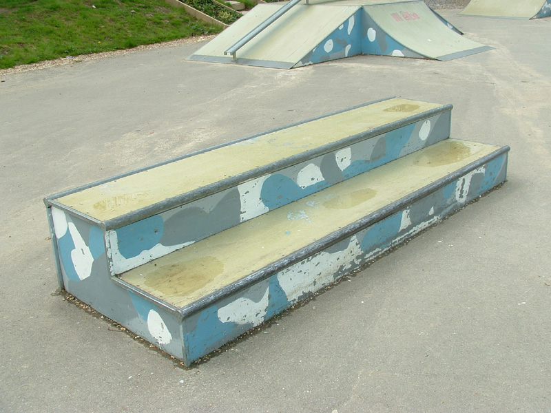

|
Review of Crowborough Skatepark
|
|
This skatepark is near where I work and I ride it in my lunch hour. It is right on top of a hill which makes it windy in the winter but it means that it dries out quickly. It is right by the leisure centre which means you don't get all the kids hanging out smoking and there is a constant stream of people walking past watching you. You also get a few kids come and run on the ramps which can be quite amusing. I don't think anyone really rides here becasue all the kids think I am amazing, so they have obviously never seen anyone good before (if they had they would know I was not amazing). The surfact is some sort of plastic resin which is probably the most slippy surface known to man. It is probably the most slippy skatepark I have ever ridden. This is probably the worst thing about it. I have taken pictures of the ramps but no overview so you'll have to peice it together in your head..  This is probably the most fun thing here. The quarters are quite small but ok to air, and the hip is pretty fun as you can go big or small on it. You could also manual the deck, but everytime I try I slip out when I drop in. Alley oops would be good if you were good at them.  Turn around and this is infront of you. You have to pedal after the drop in to clear the box but it's ok. The right hip is ok too but again the landing is slippy. You might be able to see that the right hand side of the box has had the screws taken out so its really bumpy. You also might be able to see the puddle on top of the box which is always collected there and I have to get my feet wet to get rid of it. Other than that though its not a bad box really for a small park.  If you do the right hip on the box then you can line up with this with a bit of skill, although that lip is not inline with the landing you still have to turn to your right a bit more to hit it and I have slid out on the landing trying to get round to it. Wouldn't be a problem if it was wood. Coming out of that lip to the left or right is not fun because of the rail in the middle of the driveway. I don't like this thing much but if I do use it I like to come out of the driveway and into the transition either way, or jump over, or onto the rail and ride along it.  If you go over the driveway straight then you come to this quarter, which is ok, but the deck is really slippy. If you try to tyre tap the top you slip out about 50% of the time. If have tried scratching it with a rock but it didn't help. Its ok to air though.  The other side of the jump box. I have never used that rail. It's quite fun to table between the flat banks.  After the box you hit this. This might be the worst part. You come out of the box with loads of speed so you either have to skid round this or go up it and practically stop so you can turn round. Any ideas what I could use this for?  Something for the skaters. I can hop onto it but thats about it. So there you have it, Crowborough Skatepark. Not the best but not the worst either. Why use such slippy plastic though? |